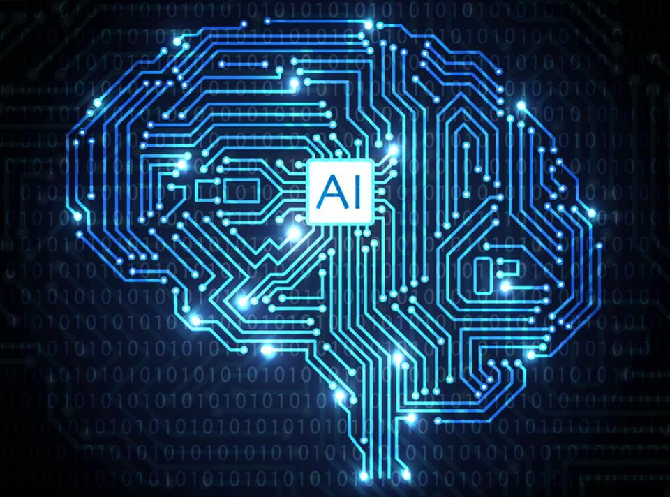

is considered one of the branches of computer science, and one of the main pillars upon which the technology industry is based in the current era. The term artificial intelligence - which is referred to by the acronym (AI) - can be defined as the ability of machines and digital computers to perform certain tasks that mimic and are similar to those of organisms. Smart Such as the ability to think or learn from previous experiences or other processes that require mental processes, as artificial intelligence aims to reach systems that enjoy intelligence and behave in the way that people behave in terms of learning and understanding, so that these systems provide to their users various services of education and guidance Interaction, etc.
